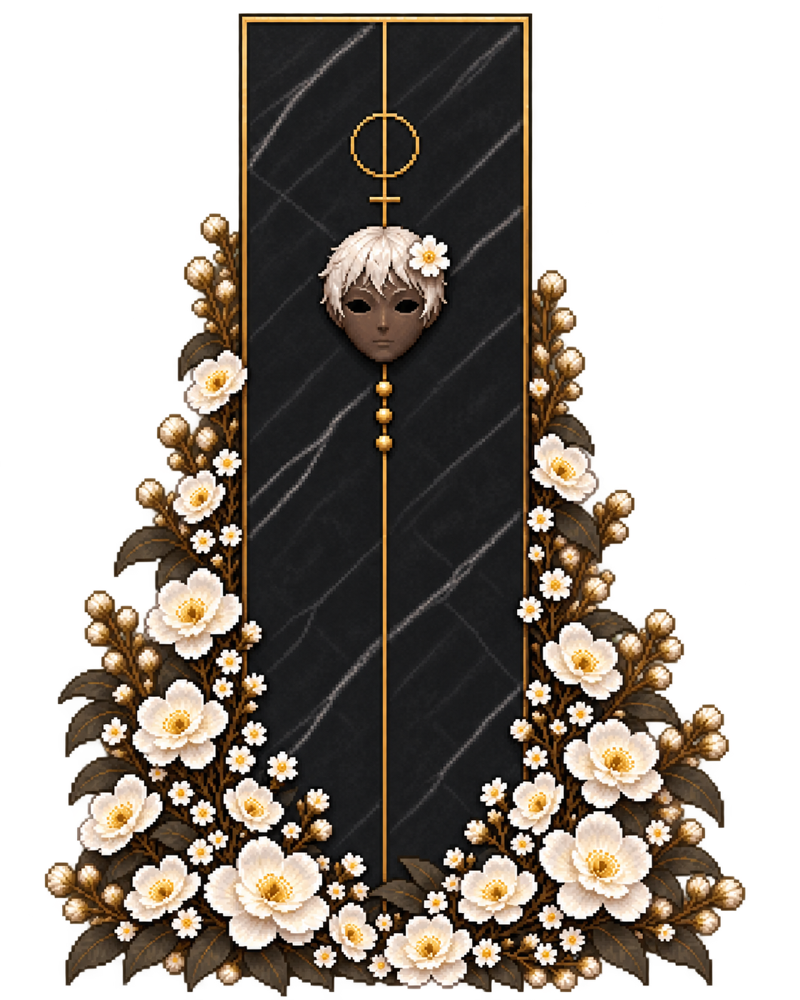

所持因子 0 Rd
0の条件は使いません。両方指定すると先に達した条件で休憩し、休憩後は自動出撃します。設定変更で出撃のカウントをリセットします。
雇用済みの仲間がいません。仲間タブで雇用してください。
このブラウザに保存されたYggClickerの進行・表示設定・自動バックアップ・読み込み前バックアップを削除し、初期因子0Rdからやり直します。
この操作は取り消せません。書き出したセーブファイルや、他のゲームのデータは削除しません。
フォルダや公開先を移す前に書き出し、移動先で読み込むと引き継げます。
自動保存は10秒ごとと購入・対象変更時。読み込み前の進行は別途バックアップします。別の端末やブラウザには自動同期されません。
APが溜まると自動で行動します。物理ダメージは防御、精神ダメージは抵抗で軽減します。
敵は倒れてから5秒で再出現します。部隊が全滅していても、「あなた」の手動攻撃は続けられます。
売却時は直前の強化価格の半額を返還します。必要Lvを下回ったパークは休止し、Lvを戻せば再び有効になります。
演出はオプションで調整できます。周回を止めるときは一時停止ボタンを押してください。
進行は自動保存されます。ブラウザのデータ削除に備え、「セーブ管理」から定期的にファイルへ書き出してください。閉じていた間は最大8時間分の自動周回を反映します。
このゲームを遊ぶにはJavaScriptを有効にしてください。